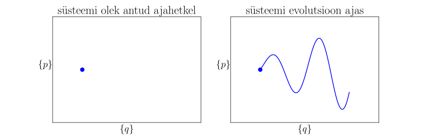
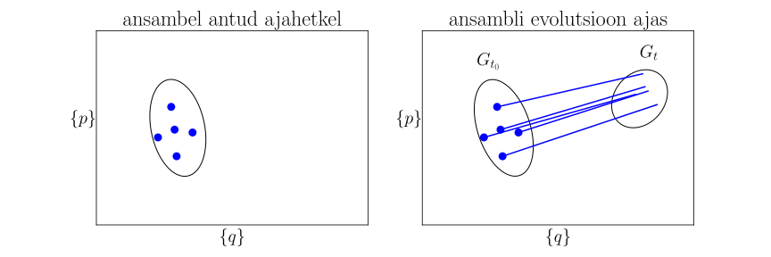

Liouville’i võrrand
Contents
4.1. Liouville’i võrrand¶
4.1.1. Jaotusfunktsioon¶
Vaatleme klassikalist süsteemi, mille saame me kirjeldada kahel viisil.
4.1.1.1. Mikroskoopiline kirjeldusviis¶
Osakeste süsteemi dünaamika kirjeldamiseks vajame (vt Klassikaline statistiline ansambel)
Üldistatud koordinaadid \(q_i=q_i(t)\), kus \(i=1\ldots s\)
Üldistatud impulsid \(p_i=p_i(t)\), kus \(i=1\ldots s\). Koos koordinaatidega on kokku \(2s\) tundmatu muutujat, seega tegu on \(2s\) mõõtmilise faasiruumiga.
Süsteemi vabadusastmete arv kolmemõõtmelises ruumis \(s=3N\), kus \(N\) on osakeste arv
Hamiltoni võrrandid \(\dot{q_{j}}=\frac{\partial\mathcal{H}}{\partial p_{j}}\) ja \(\dot{p_{j}}=-\frac{\partial\mathcal{H}}{\partial q_{j}}\), kus \(\dot{q_j}=\frac{\mathrm{d}q_j}{\mathrm{d}t}\)
Hamiltoni funktsioon \(\mathcal{H}=\mathcal{H}(\{q,p\},t)\), kus Hamiltoni funktsiooni ajaline sõltuvus võib olla ka ilmutatud kujul peale \(\{q,p\}\) sõltuvust ajast
Seega kirjeldame süsteemi antud ajahetkel punktina \(2s\) mõõtmilises faasiruumis ning süsteemi evolutsioon kujutab ennast kõverat selles ruumis, mis on määratud Hamiltoni võrranditega (vt joonist).
{kind=link}
4.1.1.2. Statistiline kirjeldusviis¶
Klassikalise süsteemi statistilises kirjeldusviisis (vt Klassikaline statistiline ansambel) on süsteem antud ajahetkel faasiruumi punkti lõpmata väikeses ümbruses \(\mathrm{d}q\mathrm{d}p=\mathrm{d}q_1\ldots\mathrm{d}q_s\mathrm{d}p_1\ldots\mathrm{d}p_s\) tõenäosusega \(\mathrm{d}W(\{q,p\},t)=\rho (\{q,p\},t)\mathrm{d}q\mathrm{d}p\), kus \(\rho (\{q,p\},t)\) on tõenäosustihedus ehk jaotusfunktsioon.
Kõik antud ajahetkel erineva tõenäosusega realiseeruvad faasiruumi punktid moodustavad statistilise ansambli, vt joonist. Siin me eeldame, et igal ajahetkel ei ole süsteemi olek ühene, vaid eksisteerib mitu võimalust, kus igaühel on oma tõenäosus.
{kind=link}
4.1.2. Liouville’i teoreem¶
Olgu \(G\) on teadud faasiruumi piirkond ja \(G_{t_0}\) on ajahetkel \(t_0\) selle piirkonna täitvate faasiruumi punktide hulk. Täitku samad punktid ajahetkel \(t\) faasiruumi \(G_t\) (vt pilti ülespool). On oluline, et ükski punktidest ei ole kaduma läinud ega juurde tulnud, kuid piirkonna \(G_t\) kuju on muutunud võrreldes \(G_{t_0}\) kujuga.
Liouville’i teoreem väidab, et kui süsteemi liikumist kirjeldavad Hamiltoni võrrandid, siis statistilise ansambli ajalise evolutsiooni käigus vaadeldavate faasipunktide poolt hõivatud faasiruumala ei muutu,
Teoreemi tõestuseks, vaatleme üldist integreerimismuutujate vahetust
Lihtsuse mõttes vaatleme edasi ainult erijuhtu, kui \(s=1\) ja tähistame \(q(t),p(t)=q,p\) ja \(q(t_0),p(t_0)=q_0,p_0\), siis
Näitame, et see jakobiaan ei sõltu ajast
kus me olime rakendanud Hamiltoni võrrandeid. Seega jakobiaan ei sõlju ajast ja selle väärtus on konstantne ja antud ääretingimusega \(\mathrm{det}\left[\frac{\partial (q_0,p_0)}{\partial (q_0,p_0)}\right]=1\). Järelikult Liouville’i teoreem on tõestatud.
Liouville’i teoreemist järeldub, et
Et selles veenduda, arvestame, et Liouville’i teoreemist järeldub ka \(\mathrm{d}q(t')\mathrm{d}p(t')=\mathrm{d}q(t)\mathrm{d}p(t)\), ehk faasiruumi elementaarne ruumala ei sõltu ajast. Kuna \(\rho(\{q,p\},t)\) saame interpreteerida faasipunktide tihedusena, siis \(\rho(\{q,p\},t)\mathrm{d}q\mathrm{d}p\) on faasipunktide arv elementaarses ruumalas. Meie konstruktsiooni kohaselt on faasipunktide arv elementaarses ruumalas ajas muutumatu, seega \(\rho(\{q(t),p(t)\},t)\mathrm{d}q(t)\mathrm{d}p(t)=\rho(\{q(t'),p(t')\},t')\mathrm{d}q(t')\mathrm{d}p(t')\) ja
Siit järeldub omakorda, et \(\frac{\mathrm{d}\rho (q,p,t)}{\mathrm{d}t}=0\).
4.1.3. Liouville’i võrrand¶
Lähtume seosest \(\frac{\mathrm{d}\rho (q,p,t)}{\mathrm{d}t}=0\), mida kirjutame lahti
Siin kasutasime jälle Hamiltoni võrrandeid \(\dot{q}_i\) ja \(\dot{p}_i\) jaoks. Olimegi saanud Liouville’i võrrandit. Võrrandit saab üles kirjutada kompaktsemalt defineerides Poissoni sulud
kus \(f\) ja \(g\) on suvalised faasiruumikoordinaatide funktsioonid. Poissoni sulude abil saab Liouville’i võrrandi esitada kujul
Liouville’i võrrand määrab ära jaotusfunktsiooni käitumist ajas \(\rho=\rho(t)\), kui selle väärtus \(\rho(t_0)\) on alghetkel \(t_0\) teada.
On näha, et puudub jaotusfunktsioonil sõltuvus ajast ilmutatud kujul \(\frac{\partial \rho}{\partial t}=0\), kui \(\left\{\mathcal{H},\rho\right\}=0\). See olukord realiseerub termodünaamilises tasakaalus. Olgu vastav jaotusfunktsioon on \(\rho=\rho_0\), siis \(\frac{\partial \rho_0}{\partial t}=\left\{\mathcal{H},\rho_0\right\}=0\). Näiteks klassikalises kanoonilises ansamblis \(\rho_0\sim e^{-\frac{\mathcal{H(q,p)}}{k_\mathrm{B}T}}\). Siin on oluline see, et sõltuvus üldistatud koordinaatidest ja impulsidest ilmub ainult Hamiltoni funktsiooni kaudu ja muud moodi see sõltuvus ei teki.